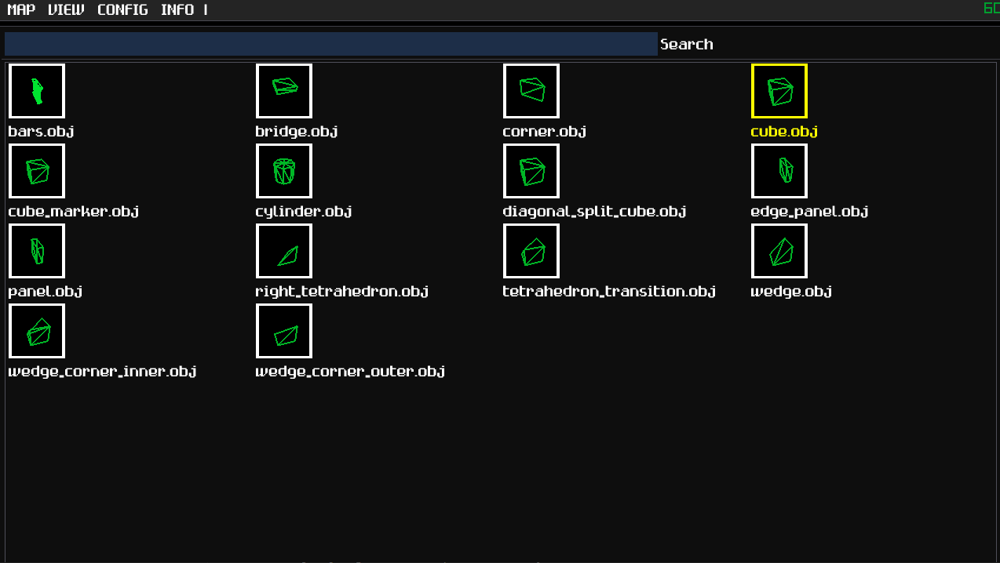

Total Editor 3 is designed to build 3D game levels out of small 3 dimensional tiles. Each tile has a "shape," which is a 3D model that you select from the editor, and a primary or secondary "texture," which is a 2D image that gets placed on the faces of the model. Tiles also have a rotation defined by "pitch" and "yaw," rotations on two axes. Use the WASD keys to move the camera around, and hold the middle mouse button to turn the camera. Alternatively, you may hold left alt and then drag holding the left mouse button to turn the camera.
The application starts in the map editor screen. In this screen you have a grid and a cursor. The cursor is surrounded by a magenta colored wireframe cube. Moving the mouse moves the cursor along the plane of the grid. Although the camera can move anywhere, edits to the map are only done on the layer indicated by the grid. The advantage of this approach is that the cursor can be moved inside and behind any tile on its designated layer. There are also colored lines visible in the corner of the grid labeled "XYZ," which represents the three axes of space. Notice that the direction of each letter from the center of the axes represents the positive direction; i.e. positive Y is up because the Y is on top. Using the mouse's scroll wheel will bring the grid up and down, along the Y axis. This movement is limited by the map's dimensions, which are set when the "new map" menu option is clicked.
The cursor begins in "tile mode," which means that it contains a tile that can be placed onto the grid by left clicking. Tiles in the grid can be erased by right clicking. The yaw rotation of the tile can be turned in 90 degree increments using the Q and E keys. The tile can be pitch rotated using the F and V keys. The angles can be reset by pressing R.

The textures of the tile can be chosen by pressing TAB. This will bring the editor into the "texture picker," where an array of images placed in the "assets/textures/tiles" folder relative to the application appear. (You can customize which directory it looks in under the "config" menu.) Clicking on a texture will set the texture to be used by the cursor in the map editor. Left click will set the 'primary' texture, and right click will set the 'secondary' texture. Each tile shape will use these two textures in different ways, but usually the primary texture is used for the top and bottom sides of the shapes. Some shapes, like 'bars.obj' will only use the primary texture. The text field near the top will allow the displayed textures to be filtered by their names. This filter also takes into account the file path of each texture, so typing in the name of a subdirectory will reveal textures within the subdirectory. Pressing TAB again will bring the user back to the map editor. PROTIP: To clear the search field completely without selecting any text, just press CTRL+X!
Pressing TAB while holding LEFT SHIFT while in the map editor will bring up the "shape picker." This is analogous to the texture picker, except instead of images it displays wireframe representations of several models found in the "assets/models/shapes" directory. These are a set of .obj files used as templates for the shape of each tile. Pressing TAB or LEFT SHIFT and TAB will bring the user back to the map editor.
When the cursor is over an existing tile on the grid, pressing T will copy the underlying tile's textures into the cursor's tile. Pressing Y will copy only the secondary texture of the underlying tile. Furthermore, pressing G will copy the underlying tile's shape and orientation. This can help avoid losing time looking through the menus for frequently used shapes and textures.
When holding shift, the tile inside of the cursor disappears. This means the cursor is in rectangular mode. It is like tile mode, except the cursor's box expands from the point where shift was first held to the current position. Pressing left or right click will then place or remove tiles in the entire area. This makes it efficient for placing identical tiles in rows, columns, and rectangular chunks. The grid may be moved vertically using the scroll wheel while holding shift to create 3 dimensional rectangles.
This is a quick way to duplicate certain groups of tiles. When in the rectangular cursor mode mentioned above, pressing the B key will take all of the tiles inside of the rectangle and turn them into a "brush," putting the cursor into "brush mode." In this mode, the cursor will copy the entire structure of tiles into the grid using left click, instead of filling the area with a single tile type. This can be used to avoid rebuilding complex structures in multiple places. The cursor cannot erase anything using right click in this mode. Pressing ESCAPE or BACKSPACE will bring the cursor into its regular "tile mode."
Pressing H will remove all layers of tiles from view, except for the one the editor grid is on. This allows for fast editing of the interiors of rooms and the like. The grid cannot move into or edit the hidden layers. Pressing H again will reveal the hidden layers. When first activating the layer isolation, holding H and moving the grid will select multiple layers to isolate.
Holding LEFT CONTROL and pressing E will bring the cursor into "entity mode." Entities represent dynamic objects in a game, such as player spawn points, enemies, items, and whatnot. They can be displayed as colored spheres, models, or billboard sprites, and can be assigned name tags. The game code can replace these with whatever they're actually supposed to be when loading the map.
When the cursor is in entity mode, it can add and remove entities with the mouse buttons like in tile mode. Also like tile mode, pressing T or G will copy the entity in the map under the cursor. Pressing Q and E will change the entity's yaw orientation like with tiles, but the angle changes in 45 degree increments. Holding shift during rotation will rotate in 15 degree increments. The orientation can be reset using the R key. Entities can also be turned up and down by using the F and V keys. The cursor can be brought out of entity mode using the ESCAPE or BACKSPACE key.
Holding LEFT CONTROL and pressing TAB will enter the entity editor. This will configure the properties of the entity being placed by the cursor in the map editor. The color picker and the slider near the top will control the appearance of the entity and how large it is. The list underneath are the entity's properties. These are arbitrary pieces of data to be used by the game to determine the entity's characteristics. They are pairs of keys and values, where keys are the names of properties and values are pieces of text to represent the data. For instance, an enemy may have a property with the key "ambush" and the value "true" to indicate that an enemy should stand still and wait for the player to appear instead of searching around.
The text field below the property list is used to add properties. The text in the field will be used as the key, and pressing the add button will add that property to the list. The value of the property can be edited directly in the property list by clicking on its text field. Pressing the remove button will remove the property it's next to. Removing the "name" property will remove the name tag from the entity in the map editor, and it is otherwise nonessential.
Changes made in the entity editor are made to the entity held by the cursor and nothing changes in the map itself. To update the properties of an entity on the map, bring the cursor into entity mode with CTRL+E, move the cursor onto the desired entity to edit and press G. Then, open the entity editor with CTRL+TAB and make the desired changes. Exit out of the editor and then left click on the grid space that the old entity occupies. This will replace that entity with a similar entity that has the desired property changes.
Since version 3.1, entities can be displayed as either spheres, billboard sprites, or textured models. This can be changed by using the drop-down menu at the top of the entity menu. For models, the texture is optional. Like the spheres, the sprites and models can be sized and colored individually.
The model display mode is particularly useful for representing dynamic tiles: tiles that can be interacted with and move separately from the rest of the map's geometry, like doors, switches, or elevators.
Operations done on tiles and entites can be undone by holding LEFT CONTROL and pressing Z. By default, you can erase up to the last 30 actions performed. This number can be customized in the CONFIG menu. Undone actions can be carried out again when pressing CTRL+Y. Like other applications, undone actions cannot be redone if new actions are performed after the undoing.
The CONF menu will allow the changing of various editor settings. The "asset paths" item will allow the user to change where the application searches for textures and shape models. This will change what is displayed in the texture and shape pickers, but will not change the appearance of tiles already placed. This is because tile data saves the path of each shape and texture relative to the editor's executable file. One can also change the texture and shape used by default when opening the editor or making a new map.
There is also a field in the "asset paths" dialog for setting a "hidden file regex." This is a regular expression; any file path that is matched by this regular expression will be hidden from the texture and shape pickers. By default, it is configured to hide any file that ends with '_hidden' or '_atlas' before the file extension. This feature can be useful for cases where a tile texture has an animation stored as a texture atlas. If you use the atlas directly as a texture, it will look distorted when mapped directly onto a tile. Instead, you can create a separate image for just one of the frames of animation to use as the in-editor version, and then hide the full atlas to reduce visual clutter.
The "settings" item in the CONF menu allows the user to choose how many operations to remember for undoing, and how quickly the camera rotates with the movement of the mouse. The background color for the editor may also be changed here. Settings are saved as a "te3_settings.json" file next to the executable. To revert to default settings, simply delete the file.
Complete maps can either be parsed by the game's code from the .te3 file the editor saves or exported as a 3D model file. Going into the FILE menu and selecting "export" will evoke a dialog that asks for the file path of the model to export to. Currently, this editor only exports maps as .gltf files or .glb (binary gltf) files. These files will also contain nodes for each entity on the map with all of its properties in the "extras" field.
Currently, the .gltf/.glb model references textures using file paths relative to the exported file, and they are not embedded.
There is also a check box that, when checked, will create separate GLTF nodes for the geometry using each texture. This is useful for marking pieces of geometry that function in a special way. For instance, the included "invisible" texture, though it is visible in the editor, can be used to indicate that some tiles may act as invisible walls in the game. For each of these separate nodes, the path to the texture (relative to the editor executable) is used as the name of the node; however, the slashes in the file path are replaced with underscores, and so is the dot in the file extension, because certain game engines (Godot) will not allow game object names to contain special characters.
The other option, "cull redundant faces between tiles", controls whether or not the exported model should try to removes faces between tiles that are not visible from the outside.
Maps are saved and loaded as .te3 files. This is a custom format made for this editor that uses the JSON data exchange format. They are structured like in this example:
{
"meta": { // Information about the program used to make the file
"editor": "Total Editor",
"version": "3.2"
},
"editorCamera": { // The orientation of the camera in the editor when it was last saved.
"eulerAngles": [0.0, 0.0, 0.0], // Angles are in degrees.
"position": [0.0, 0.0, 0.0]
},
"ents": [ // List of map entities
{
"position": [0.0, 12.0, 3.0], // Position in world coordinates
"color": [255, 0, 0], // Red, green, blue color
"angles": [0.0, 90.0, 0.0], // Euler angles (the Z angle is always 0)
"radius": 0.75, // Radius of sphere (for models & sprites, this is the same as the scale)
"display": 1, // Entity display mode (0 = sphere, 1 = model, 2 = sprite)
"model": "assets/models/geoffrey.obj", // Path to model file (only when display mode == 1)
"texture": "assets/textures/skins/geoffrey.png", // Path to texture file (only when display mode == 1 or 2)
"properties": [
"name": "geoffrey",
"age": "120",
"favorite direction": "(1, 0, 0)"
]
},
{
"position": [2.0, 0.0, 0.0],
...
}
],
"tiles": [ // The arrangement of tiles
"width": 12, // Dimension along the X axis
"height": 9, // Dimension along the Y axis (up)
"length": 12, // Dimension along the Z axis
"textures": [
"assets/textures/geoffrey_skin.png", // Paths to each texture relative to the editor's executable
"assets/textures/brick_wall.png"
],
"shapes": [
"assets/models/shapes/cube.obj",
"assets/models/shapes/tetrahedron.obj" // Paths to each tile shape relative to the editor's executable
],
"data": "/////wAAAAD/////AAA///AAAAAP..." // Tile data encoded as a base64 string (details below)
]
}
As noted, the data for the tile grid is encoded as a Base64 string. It converts binary data into something that can be compactly printed as characters in a text file. In binary, the data is laid out in the following structure:
struct Tile {
int16_t modelID, // The index into the "shapes" JSON array. If less than 0, represents a run of blank tiles of length -modelID.
int16_t textureIDs[2], // The indices into the "textures" JSON array. Primary texture is first, then secondary.
uint8_t yaw, // The yaw angle of the tile. Value is 0-3 for each 90 degree increment.
uint8_t pitch, // The pitch angle. Value is 0-3 for each 90 degree increment.
};
The byte order / endianness will match that of the machine used to save the file. In most cases, this will be little endian.
x = (t % width) * 2.0y = (floor(t / (width * length))) * 2.0z = (floor(t / width) % length) * 2.0
Once the tile data is read from the file, how does one go about rendering them?
The recommended way of doing this is to use instancing. Most game engines have some mechanism for doing this.
Instancing takes the same mesh and draws it in several different places at once, which saves on performance.
Rendering each individual tile as a separate game object would cause considerable slowdown otherwise.
Groups of matrices or positions + rotations will be fed into the game engine to tell how each instance is drawn.
Since the tiles have various shapes and textures, arrays may have to be created for each combination
of texture and shape.
Alternatively, the data from each tile's shape model can be integrated into an aggregated mesh. This is produces a similar
result to exporting the map as a .gltf.
Note that, when calculating the transform of a tile, the matrix for the pitch rotation is applied first, and then the yaw rotation. You may also need to invert the angles of the tile depending on your desired coordinate system.
If there are any significant hiccups in trying to use this map format, it may be helpful to refer to the application's source code. Particularly, look at tile.hpp, tile.cpp, grid.hpp, and map_man.hpp/.cpp.
Since the tile shapes just come from .obj files, you may of course add your own shapes and the application can use them as long as they're in the configured shapes directory. Be sure to triangulate models before exporting, because the model importer used will not support other polygons.
Material information will only be used to determine where to apply the primary or secondary textures. Faces set to a material called "primary" (case sensitive) will be used for the primary texture, and faces set to a material called "secondary" (case sensitive) will be used for the secondary texture. Materials with other names will be used with the primary texture. Since the material name to face assignment happens in the .obj file, the contents of any .mtl file will be ignored and these files are not necessary to keep.
In Blender 4.3, I use the following settings to export the shapes. You have to export materials for the primary / secondary textures to work, but the "strip" path mode can be used to remove references to any texture file.
In order to ensure the tiles fit in the grid properly, ensure that the tiles:
Even if you break all of these rules, you should still be able to use the tiles, but they may not fit into the grid correctly.
If you want to optimize the culling of faces when exporting a .gltf file, try to make the vertices in your tile shape match up when the shape is put in rows. A face is culled in the map's model if:
There are some shapes included with the application that may seem strange, so here I will explain how they are used.